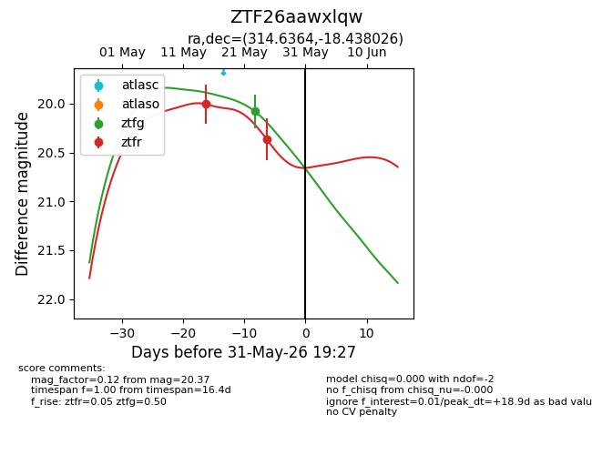
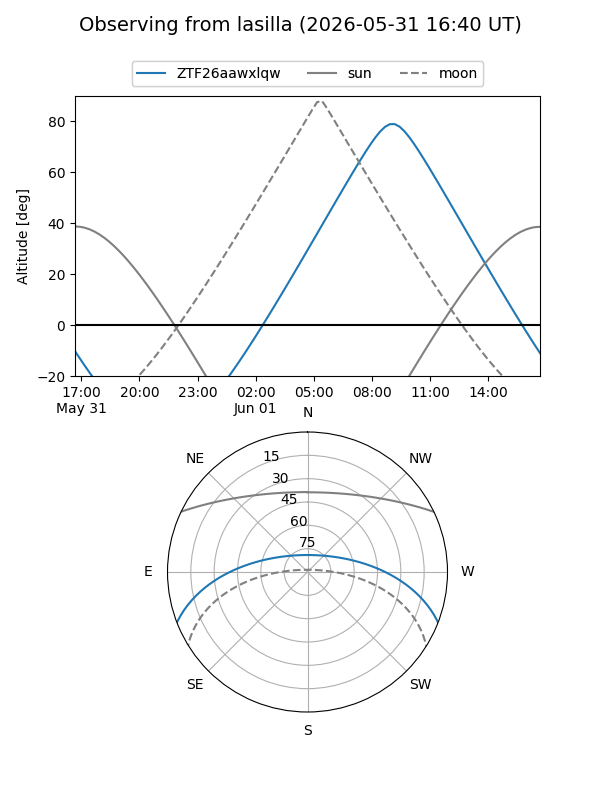
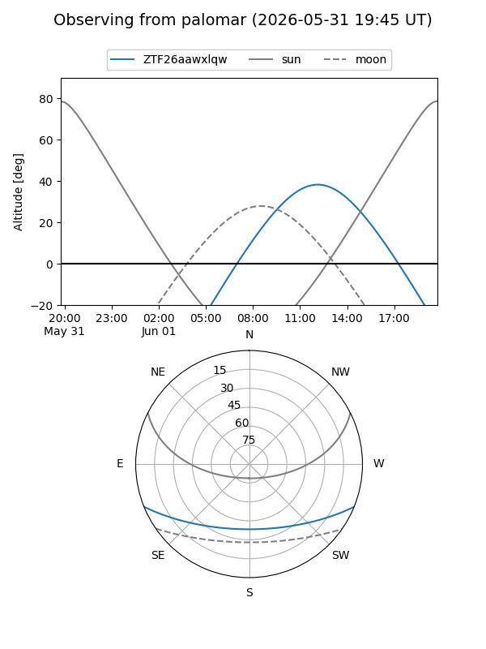
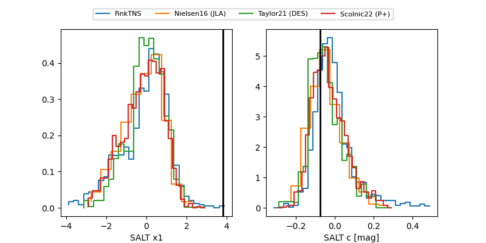

ZTF26aawxlqw
Target ZTF26aawxlqw at 2026-05-31 19:28
Aliases and brokers:
lsst-FINK: link
lsst-Lasair: link
lsst-ALeRCE: link
ztf-FINK: link
ztf-Lasair: link
ztf-ALeRCE: link
alt names
ZTF26aawxlqw (ztf,fink_ztf)
Coordinates:
equatorial (ra, dec) = 314.6364,-18.43803
equatorial (HMS+DMS) = 20:58:32.73,-18:26:16.89
galactic (l, b) = (29.1236,-36.07462)
Flags:
Photometry:
last ztfg=20.08, ztfr=20.37
1 ztfg, 2 ztfr detections
Lightcurve

Visibility


Additional plots
